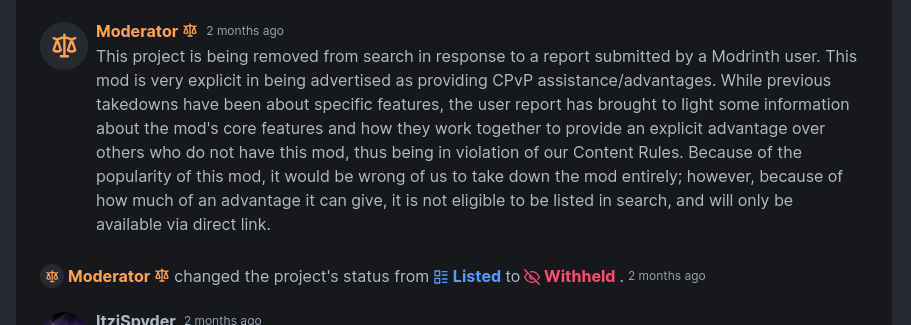

We were withheld, not banned. ClickCrystals project on Modrinth is withheld due to the presence of unfair advantages.

Incompatibility.
The new versions of ClickCrystals has a new
feature called Discord RPC. This essentially displays your acitivies
on discord presence. Because the API that we use only supports Linux
and Windows, ClickCrystals has become incompatible with MacOS and
Pojav.
Here's how you can solve this:
Get off Mac
- ClickCrystals is not compatible with MacOS.
- If you have enough money to afford a MacOS, with the same money you could buy a real computer 10x better. Apple is a scam and you should hop off.
Get a real PC
- Why play Java on phone? It's incompatible now!
In around May of 2023, our mod ClickCrystals, developed by ImproperIssues (aka ItziSpyder), has been stolen by a person with the alias of L0rax or Niksa_. This person proceeded to inject malicious code that grabs your Microsoft account, Skyblock information, and IP then sends them to a Discord webhook.
L0rax has commited identity theft and advertised ClickCrystals as his own mod on CurseForge. Luckily, after a few months of fighting, the duplicate mod was taken down and the webhook was nuked and destroyed. 7 months later, we have decided that the situation on CurseForge has calmed down enough for us to reupload our mod to the site.
Please refrain from downloading ClickCrystals from any link other than the ones provided in the downloads Tab up top of the page. Do not accept random files from strangers or websites that you do not trust.
ClickCrystals script is an in-game custom module maker. The script allows you to create custom modules similarly in a way you would create datapacks.
Click on the download Tab on top of this screen.
Short answer, no.
Long answer, it is not a cheat. It does not automate any task, for every action the mod preforms, you have to click or interact with something. The definition of macro is doing a task without the player inputting anything. This is false. Unless a player creates a macro with ClickCrystals script, the mod itself does not provide any unfair advantages.
While we believe ClickCrystals doesn't provide any unfair game advantages, the world does not. Servers WILL ban you if they find out you are using this mod. Best way to prevent this from happening is to not get screenshared. We have provided multiple approaches to this:
- The mod does not flag anticheat
- The mod looks like normal gameplay in third person view
- The mod, unless errors and stacktraces, has its own custom log file seperate from the vanilla one; can be easily deleted
If you still possess older versions of ClickCrystals, you may have heard of the command !cc -users. This command was once added as a fun easter egg, which has later caused a disaster leading to its removal in later versions. Servers can use this to force ban you, be sure to update your version!
Apostrophe key. If you don't know what it is, you're a third grader that shouldn't be play games and should be studying instead.